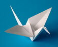

El arte del papel plegado
Una forma de expresión

Para los occidantes nos resulta llamativo e ingenioso el arte de crear con papel todo tipo de figuras con determinados dobleces.
En una afición que se ha convertido en una pasión para muchos, por las bellas formas que se logran. Llevan siglos de existencia y por ello, tiene una historia muy rica, formando parte esencial de algunas costumbres japonesas.
Zaragoza tendrá la primera Escuela-Museo de Origami de Europa
La capital aragonesa tendrá la primera Escuela-Museo de Origami de Europa el próximo año, cuando abra el espacio que se ha habilitado en los bajos del mercado de San Vicente de Paúl, en el Casco Histórico.
Tras la firma del acuerdo, el consejero municipal de Cultura, Educación y Medio Ambiente, Jerónimo Blasco, ha explicado que este convenio supone el "arranque del futuro centro de formación y museo destinado a la papiroflexia".
Su localización, en los bajos del Mercado de San Vicente de Paúl, es una ubicación que le permitirá "estar en el circuito cultural de la ciudad, próximo a otros centros culturales".
La Asociación Origami de Zaragoza tiene un gran fondo que ya mostró el pasado año con una exposición a la que asistieron más de 40.000 personas en el centro de Historia y sus socios están convencidos de que esta futura Escuela-Museo será una novedad porque no habrá otro en toda Europa y tiene un enorme interés.
Breve historia del Origami
El Origami o Papiroflexia , como se lo llama en los países de habla hispana, es un arte que se basa en la técnica del plegado de papel, para obtener figuras y formas decorativas.

El término Origami proviene de las palabras japonesas "ori" que significa plegado y "gami" que significa papel. Es un arte milenario, que Japón desarrolló a partir de la adopción de la invención china del papiro.
El origami, en su origen, tuvo en Japón un sentido religioso. Más tarde se desarrolló como un pasatiempo y posteriormente, como recurso pedagógico y terapeútico, atrayendo la atención de matemáticos y cientificos.
Aunque en esencia el Origami puede parecer y de hecho es una técnica sencilla, el grado de complejidad que ha alcanzado en el transcurso del tiempo, hace que algunas de sus creaciones requieran días de trabajo.
En el Origami no se utilizan tijeras, pegamento ni grapas, tan sólo el papel y las manos. Aun así, con sólo algunas hojas de papel pueden obtenerse distintas formas geométricas y figuras parecida a la realidad (animales, personas, flores, objetos, etc).
el Origami no sólo representa figuras inmóviles, también existen objetos móviles donde las figuras pueden moverse de maneras ingeniosas.
Examen de optimización de imágenes, maquetacuón web, HTML y CSS.
Cebanc | 2019